ParetoFactory¶
(Source code, png, hires.png, pdf)
{kind=link}
{kind=link}
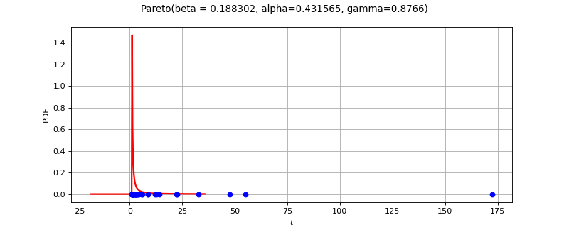
-
class
ParetoFactory(*args)¶ Pareto factory.
See also
Notes
Several estimators to build a Pareto distribution from a scalar sample are proposed.
Moments based estimator:
Lets denote:
 the empirical mean of the sample,
the empirical mean of the sample, its empirical variance,
its empirical variance,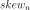
the empirical skewness of the sample
The estimator
 of
of
 is defined as follows :
is defined as follows :The parameter
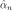
is solution of the equation: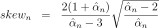
There exists a symbolic solution. If
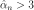
, then we get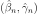
as follows: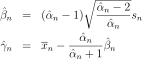
Maximum likelihood based estimator:
The likelihood of the sample is defined by:
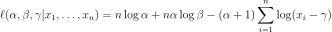
The maximum likelihood based estimator
of maximizes the likelihood: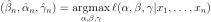
The following strategy is to be implemented soon: For a given
 , the likelihood of the sample is defined by:
, the likelihood of the sample is defined by: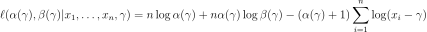
We get
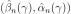
which maximizes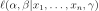
: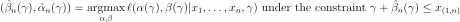
We get:
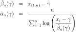
Then the parameter
is obtained by maximizing the likelihood 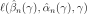
: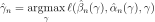
The initial point of the optimisation problem is
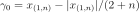
.Least squares estimator:
The least squares estimator
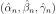
is defined by: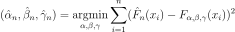
where
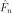
is the empirical cumulative distribution function of the sample.Methods
build(self, \*args)Estimate the distribution using the default strategy.
buildAsPareto(self, \*args)Estimate the distribution as native distribution.
buildEstimator(self, \*args)Build the distribution and the parameter distribution.
buildMethodOfLikelihoodMaximization(self, sample)Method of likelihood maximization.
buildMethodOfMoments(self, sample)Method of moments estimator.
getBootstrapSize(self)Accessor to the bootstrap size.
getClassName(self)Accessor to the object’s name.
getId(self)Accessor to the object’s id.
getName(self)Accessor to the object’s name.
getShadowedId(self)Accessor to the object’s shadowed id.
getVisibility(self)Accessor to the object’s visibility state.
hasName(self)Test if the object is named.
hasVisibleName(self)Test if the object has a distinguishable name.
setBootstrapSize(self, bootstrapSize)Accessor to the bootstrap size.
setName(self, name)Accessor to the object’s name.
setShadowedId(self, id)Accessor to the object’s shadowed id.
setVisibility(self, visible)Accessor to the object’s visibility state.
buildMethodOfLeastSquares
-
__init__(self, *args)¶ Initialize self. See help(type(self)) for accurate signature.
-
build(self, *args)¶ Estimate the distribution using the default strategy.
Notes
The default strategy is using the least squares estimators.
-
buildAsPareto(self, *args)¶ Estimate the distribution as native distribution.
-
buildEstimator(self, *args)¶ Build the distribution and the parameter distribution.
- Parameters
- sample2-d sequence of float
Sample from which the distribution parameters are estimated.
- parameters
DistributionParameters Optional, the parametrization.
- Returns
- resDist
DistributionFactoryResult The results.
- resDist
Notes
According to the way the native parameters of the distribution are estimated, the parameters distribution differs:
Moments method: the asymptotic parameters distribution is normal and estimated by Bootstrap on the initial data;
Maximum likelihood method with a regular model: the asymptotic parameters distribution is normal and its covariance matrix is the inverse Fisher information matrix;
Other methods: the asymptotic parameters distribution is estimated by Bootstrap on the initial data and kernel fitting (see
KernelSmoothing).
If another set of parameters is specified, the native parameters distribution is first estimated and the new distribution is determined from it:
if the native parameters distribution is normal and the transformation regular at the estimated parameters values: the asymptotic parameters distribution is normal and its covariance matrix determined from the inverse Fisher information matrix of the native parameters and the transformation;
in the other cases, the asymptotic parameters distribution is estimated by Bootstrap on the initial data and kernel fitting.
Examples
Create a sample from a Beta distribution:
>>> import openturns as ot >>> sample = ot.Beta().getSample(10) >>> ot.ResourceMap.SetAsUnsignedInteger('DistributionFactory-DefaultBootstrapSize', 100)
Fit a Beta distribution in the native parameters and create a
DistributionFactory:>>> fittedRes = ot.BetaFactory().buildEstimator(sample)
Fit a Beta distribution in the alternative parametrization
 :
:>>> fittedRes2 = ot.BetaFactory().buildEstimator(sample, ot.BetaMuSigma())
-
buildMethodOfLikelihoodMaximization(self, sample)¶ Method of likelihood maximization.
Refer to
MaximumLikelihoodFactory.
-
buildMethodOfMoments(self, sample)¶ Method of moments estimator.
-
getBootstrapSize(self)¶ Accessor to the bootstrap size.
- Returns
- sizeinteger
Size of the bootstrap.
-
getClassName(self)¶ Accessor to the object’s name.
- Returns
- class_namestr
The object class name (object.__class__.__name__).
-
getId(self)¶ Accessor to the object’s id.
- Returns
- idint
Internal unique identifier.
-
getName(self)¶ Accessor to the object’s name.
- Returns
- namestr
The name of the object.
-
getShadowedId(self)¶ Accessor to the object’s shadowed id.
- Returns
- idint
Internal unique identifier.
-
getVisibility(self)¶ Accessor to the object’s visibility state.
- Returns
- visiblebool
Visibility flag.
-
hasName(self)¶ Test if the object is named.
- Returns
- hasNamebool
True if the name is not empty.
-
hasVisibleName(self)¶ Test if the object has a distinguishable name.
- Returns
- hasVisibleNamebool
True if the name is not empty and not the default one.
-
setBootstrapSize(self, bootstrapSize)¶ Accessor to the bootstrap size.
- Parameters
- sizeinteger
Size of the bootstrap.
-
setName(self, name)¶ Accessor to the object’s name.
- Parameters
- namestr
The name of the object.
-
setShadowedId(self, id)¶ Accessor to the object’s shadowed id.
- Parameters
- idint
Internal unique identifier.
-
setVisibility(self, visible)¶ Accessor to the object’s visibility state.
- Parameters
- visiblebool
Visibility flag.